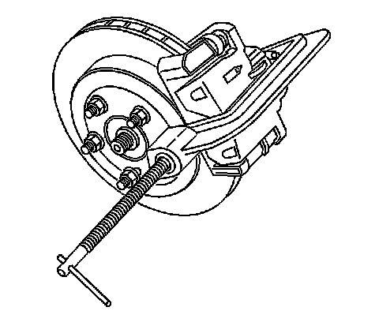
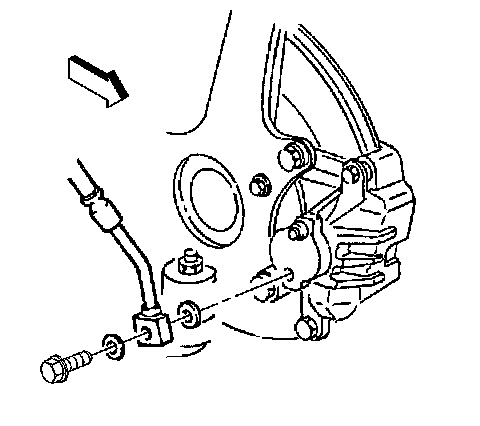
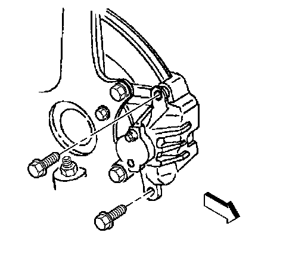

Rear Brake Caliper Replacement (JE5, JL9)
Rear Brake Caliper Replacement (JE5, JL9)
Caution: Refer to Brake Fluid Irritant Caution (Brake Fluid Irritant Caution) .
Caution: Refer to Brake Dust Caution (Brake Dust Caution) .
Notice: Refer to Brake Fluid Effects on Paint and Electrical Components Notice (Vehicle Damage Warnings) .
Removal Procedure
1. Inspect the fluid level in the brake master cylinder reservoir.
2. If the brake fluid level is midway between the maximum-full point and the minimum allowable level, no brake fluid needs to be removed from the reservoir before proceeding.
3. If the brake fluid level is higher than midway between the maximum-full point and the minimum allowable level, remove brake fluid to the midway point before proceeding.
4. Raise and suitably support the vehicle. Refer to Lifting and Jacking the Vehicle (Service and Repair) .
5. Remove the tire and wheel assembly. Refer to Tire and Wheel Removal and Installation (Service and Repair) .

6. Install a large C-clamp over the body of the brake caliper with the C-clamp ends against the rear of the caliper body and against the outer brake pad.
7. Tighten the C-clamp until the caliper piston is compressed into the caliper bore enough to allow the caliper to slide past the brake rotor.
8. Remove the C-clamp from the caliper.

9. Remove the brake hose to caliper bolt attaching the brake hose to the brake caliper.
10. Remove the brake hose from the brake caliper.
11. Remove and discard the two copper brake hose gaskets. These gaskets may be stuck to the brake caliper and/or the brake hose end.
12. Plug the opening in the brake caliper and the brake hose to prevent fluid loss and contamination.

13. Remove the brake caliper pin bolts.
14. Remove the brake caliper from the brake caliper bracket.
Installation Procedure
1. Inspect the caliper slide boots for cuts, tears, or deterioration. If damaged, replace the slides and boots. Refer to Rear Disc Brake Hardware Replacement (JL9, JE5) (Rear Disc Brake Hardware Replacement (JL9, JE5)) .
2. Install the brake caliper to the brake caliper bracket.
Important: If reusing the brake caliper pin bolts the threads of the caliper pin bolts and the threads of the caliper bracket mounting holes must be free of residue and debris prior to application of threadlocker in order to ensure proper adhesion and fastener retention.
3. Prepare the bolts and the threaded holes for assembly:
* Thoroughly clean the residue from the bolt threads by using denatured alcohol or equivalent and allow to dry.
* Thoroughly clean the residue from the threaded holes by using denatured alcohol or equivalent and allow to dry.
4. Apply threadlocker GM P/N 12345493 (Canadian P/N 10953488), or equivalent to two-thirds of the threaded length of the lower caliper bracket bolts. Ensure that there are no gaps in the threadlocker along the length of the filled area of the bolts.
5. Allow the threadlocker to cure approximately ten minutes before installation.
6. Apply a thin coat of high temperature silicone brake lubricant to the brake caliper pin bolts.
Notice: Refer to Fastener Notice (Fastener Notice) .
7. Install the brake caliper pin bolts.
Tighten the brake caliper pin bolts to 60 N.m (44 lb ft).
8. Remove the plug from the brake caliper opening and the brake hose.
Important: Install NEW copper brake hose gaskets.
9. Assemble the NEW copper brake hose gaskets, and the brake caliper bolt to the brake hose.
10. Install the brake hose and the brake caliper bolt to the brake caliper.
Tighten the brake caliper bolt to 50 N.m (37 lb ft).
11. Bleed the hydraulic brake system. Refer to Hydraulic Brake System Bleeding (Pressure) (Service and Repair)Hydraulic Brake System Bleeding (Manual) (Service and Repair) .
12. With the engine OFF, gradually apply the brake pedal to approximately 2/3 of its travel distance.
13. Slowly release the brake pedal.
14. Wait 15 seconds, then repeat steps 12 and 13 until a firm brake pedal apply is obtained; this will properly seat the brake caliper pistons and brake pads.
15. Install the tire and wheel assembly. Refer to Tire and Wheel Removal and Installation (Service and Repair) .
16. Lower the vehicle.